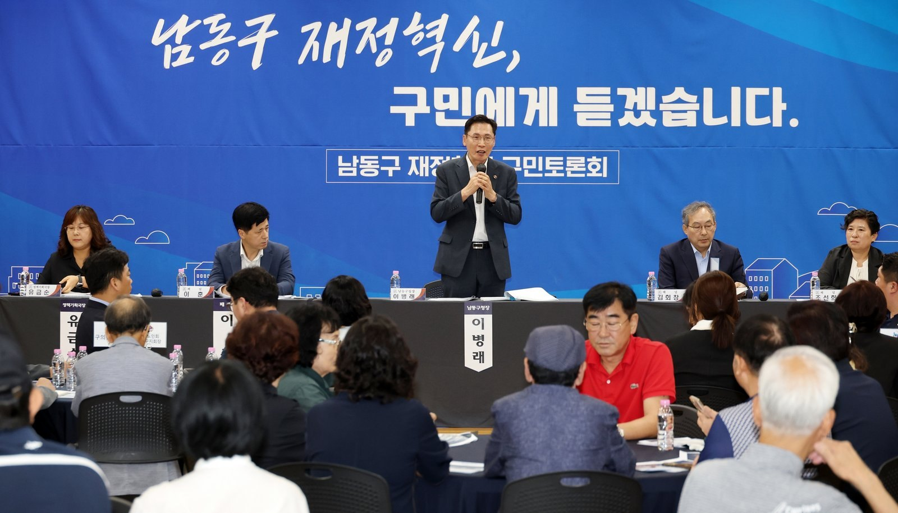
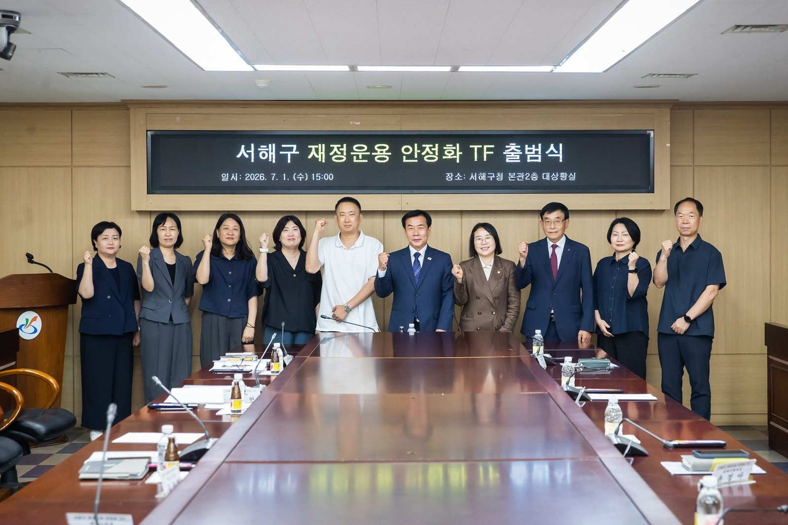

인천 미추홀·부평·남동 재정자립도 12~16%, 남동은 복지비·서해는 분구비용에 「재정위기」
미추홀구 세출 73.79%가 사회복지, 남동구 2027년 보조금 뺀 세입 158억원 감소
인천시는 2025년 조정교부금 교부율 22.3%로 상향 발표, 2021년 인천연구원은 「현행 유지」 판단
AI경제저널=김갑봉 기자 | 인천 미추홀구·부평구·남동구는 살림 100원 가운데 스스로 거두는 돈이 12~16원에 그친다. 자치구는 걷는 세목이 적어 이 지표가 원래 낮게 나오지만, 세 구 모두 최근 2년 잇달아 내렸다. 2026년 당초예산 기준 재정자립도는 미추홀구 12.26%, 부평구 14.76%, 남동구 16.48%다. 이병래 남동구청장과 구재용 서해구청장은 「재정위기」를 말했고, 남동구는 2027년 예산안에서 국·시비 보조금을 뺀 세입이 약 158억원 줄었다고 밝혔다.
나라살림연구소는 18일 2025년 결산 기준 지방자치단체 전체 재정자주도가 57.27%로, 결산 기준 집계를 시작한 2016년 이후 가장 낮아졌다고 밝혔다. 자체수입은 4.3% 늘었지만 소비쿠폰을 비롯한 국고보조금 등이 32조5000억원 늘어 세입 규모가 더 커졌고, 연구소는 기초자치단체 재정여력을 따로 점검할 일이라고 적었다. 인천 자치구의 재정공시와 예산안을 살펴봤다.

1. 자립도 12~16%, 세출 59~74%가 사회복지
재정자립도는 지방세와 세외수입이 예산에서 차지하는 비중이다. 미추홀구가 공시한 2026년 당초예산 재정자립도는 12.26%로 1년 전보다 0.97%포인트 내렸다. 용처를 스스로 정할 수 있는 돈의 비중인 재정자주도는 27.09%로 1.26%포인트 내렸고, 미추홀구는 이를 비슷한 자치단체 평균인 「유형평균보다 낮은 편」이라고 적었다. 세출의 73.79%가 사회복지다.
부평구는 재정자립도 14.76%(0.89%포인트 하락), 재정자주도 27.8%, 사회복지 비중 72.34%다. 남동구는 재정자립도 16.48%, 재정자주도 27.78%이고, 두 지표 모두 「2021년부터 지속 하락추세」라고 공시했다. 같은 2026년 예산 기준으로 연수구(28.94%)와 옛 서구(25.69%)는 20%대다.
자치구가 거두는 세금은 재산세·등록면허세와 주민세 사업소분·종업원분뿐이어서 자립도가 원래 낮게 나온다. 그래서 각 구는 유형평균과 견주는데, 이 평균은 구마다 다르다. 2025년 결산 재정자립도 유형평균은 남동구 공시에서 17.97%, 계양구 공시에서 11.84%다.
계양구는 2025년 결산 재정자립도 13.76%(0.92%포인트 하락), 재정자주도 32.10%(3.15%포인트 하락)를 「유형평균 대비 양호」하다고 공시했다. 남동구는 결산 재정자립도 15.16%(2.01%포인트 하락), 재정자주도 26.56%(3.19%포인트 하락)를 유형평균보다 낮다고 공시했다.
2025년 결산 사회복지비 지출액은 남동구가 8344억원으로 세출의 62.1%, 유형평균 금액의 1.43배다. 계양구는 4911억원으로 세출의 59.4%, 유형평균 금액의 1.33배다. 두 구는 살림 규모가 달라 배율을 단순 비교하기 어렵다. 모든 회계의 수입에서 지출을 뺀 통합재정수지는 남동구가 337억원 적자, 계양구가 21억원 흑자다. 남동구는 한 해 쓰고 남아 이듬해로 넘기는 순세계잉여금을 더하면 405억원 흑자라고 함께 공시했다. 남동구는 2025년 12월 11일 보도자료에서 일각의 「쓰다 남은 740억원」 주장을 두고 2024년 순세계잉여금 740억원은 모두 세출예산에 편성했다며 「남동구에 쓰이지 않고 주민에게 공개되지 않은 자금은 없다」고 반박했다.
2. 남동구, 국·시비 뺀 세입 158억원 줄어
남동구는 11월 9일 일반회계와 특별회계를 합친 2027년 본예산안 1조3574억원을 구의회에 냈다. 2026년보다 741억원(5.78%) 늘었다. 그러나 국·시비 보조금을 뺀 세입은 3835억원으로 약 158억원 줄었다. 사회복지 예산은 9862억원으로 873억원(9.72%) 늘어 일반회계(1조3406억원)의 73.56%가 됐다. 기초연금 2934억원, 기초생활보장·주거급여 2635억원이 들어 있다.
남동구는 고령인구와 복지 수요 증가에 따른 보조사업 확대가 구비 부담 증가로 이어졌다고 설명했다. 이병래 구청장은 11일 보도자료에서 「남동구처럼 사회복지 예산 비중이 높은 자치구는 중앙정부와 인천시의 재정적 역할이 중요하다」며 「사회복지비 상위 10개 시·군·구와 공동 대응하고, 구민과 함께 해법을 찾아 재정위기를 극복하겠다」고 말했다.
전용호 남동구의원은 10월 21일 제313회 임시회 본회의 5분 자유발언에서 「2021년 전반기까지는 지방채가 0원」이었다며, 총부채가 2014년 148억원에서 2025년 말 453억원으로 늘었다고 지적했다. 그는 국·시비 매칭사업에서 구비 비율을 줄이자고 주장했다. 남동구 공시상 2025년 말 총부채 453억원은 자산의 1.40%이고, 이 가운데 지방채 같은 채무는 142억원이다. 2025년 지방채 발행액은 52억원으로 한도 360억원 안이다.
3. 서해구, 분구 비용에 필수경비 못 채워
옛 서구는 2026년 2월 2일 보도자료에서 7월 행정체제 개편에 필요한 538억원 가운데 365억원만 확보했고, 하반기 인건비·의무경비 등 필수경비 1060억원을 본예산에 넣지 못해 모두 1233억원이 모자란다고 밝혔다. 행정운영경비를 40% 넘게 줄이는 긴축에 들어갔다.
7월 1일 출범한 서해구는 첫날 「재정운용 안정화 TF(태스크포스)」를 꾸렸다. 서해구는 검단구 분구로 재정부담이 더 커져 인건비와 폐기물처리비용 같은 「필수경비조차 확보하지 못한 재정한계 상황」이라고 밝혔다. 10월 16일 TF 정기회의에서는 인건비 등 필수경비 확보에 난항을 겪고 있다며, 검단구와 자금 정산 협의가 원만하지 않으면 인천시 분쟁조정위원회에 조정을 신청하는 방안을 검토하고, 최악의 경우에 대비해 소송 관련 법률 자문도 진행 중이라고 설명했다(20일 보도자료).

4. 조정교부금 22.3%와 인천시·연구원의 판단
인천시는 2025년 2월 18일 자치구 조정교부금 교부율을 2013년부터 유지한 20%에서 22.3%로 올리겠다고 발표했다. 조례 개정 등을 거쳐 행정체제 개편 시기에 맞춰 적용한다는 계획이었다. 조정교부금은 시 보통세의 일정 비율을 자치구에 나눠 주는 돈이다. 인천시는 2024년 시 용역이 제안한 21.5%보다 높고 광역시 평균 22.03%보다도 높다며, 자치구에 해마다 920억원 이상(2024년 본예산 기준)이 더 간다고 설명했다. 개편 자치구에는 청사·전산 같은 기반 비용으로 연 100억원 범위에서 3년간 특별조정교부금을 주고, 개편으로 재정부족액이 더 많이 생기는 자치구에는 감소분 차액을 특별조정교부금으로 메우겠다고 했다.
행정체제 개편 논의 전에 나온 인천연구원의 2021년 「자치구 조정교부금 제도개선 연구용역」(이미애 외)은 2020년 인천 자치구 8곳 세입에서 이전재원 비중이 평균 69.4%, 세출에서 사회복지 비중이 56.8%라고 분석했다. 보고서는 인천 교부율이 광역시 가운데 가장 낮은 수준이지만 자치구 평균 교부금은 811억원으로 가장 많다며, 현행 교부율을 올릴 필요는 없다고 판단했다. 다만 2027년 이후 재정분권 전환사업 보전분 307억원을 자치구에 나누려면 교부율을 1%가량 올리는 것이 적정하다고 봤다.
인천시는 2025년 7월 민생회복 소비쿠폰 지방비 800억원을 시 480억원, 군·구 320억원으로 나눴다며, 다른 시·도 11곳이 5대5로 나눈 것과 달리 6대4로 정했다고 밝혔다. 시와 군·구는 2025년 7월 21일 정책회의에서 이 분담률과 함께, 시비로만 하던 아이플러스 길러드림 사업을 이듬해부터 5대5로 나눠 내기로 합의했다.
인천시 사정도 넉넉하지 않다. 인천시 재정예산개혁TF는 9월 29일 권고안에서 시 예산의 사회복지 비중이 2014년 20%에서 2026년 40%가 됐다고 진단했다. 지방교부세 법정률을 19.24%에서 22%로 올리고, 돌봄 같은 국가정책을 넓힐 때는 국비가 먼저 부담하는 원칙을 세우도록 정부에 건의하라고 권고했다. 인천시 본청 2027년 예산안 재정자립도는 42.1%, 재정자주도는 51.7%로 모두 전년보다 낮다.
참고문헌
재정공시·회의록
- 「2026년도 당초예산 지방재정공시」, 미추홀구, 2026., https://www.michuhol.go.kr/main/local/budget/list.do
- 「2026년도 예산 지방재정공시」, 부평구, 2026., https://www.icbp.go.kr/main/administration/finance/local.jsp
- 「2026년도 당초예산·2025회계연도 결산 지방재정공시」, 남동구, 2026., https://www.namdong.go.kr/main/administration/budget/finance/reporting.jsp
- 「2025회계연도 결산기준 재정공시」, 계양구, 2026., https://www.gyeyang.go.kr/open_content/main/open_info/budget/finance.jsp
- 「2026년도 예산 지방재정공시」, 연수구, 2026., https://www.yeonsu.go.kr/main/administration/budget/finance.asp
- 「2026년도 예산 지방재정공시(옛 서구)」, 서해구, 2026., https://www.seohae.go.kr/open_content/main/open_info/finance/local.jsp
- 남동구의회 제313회 임시회 본회의 제2차 회의록(5분 자유발언 전용호 의원), 2026.10.21.
보도자료·예산자료
- 「남동구, '남는 예산 수백억 원' 일각 주장에 반박」(보도자료), 남동구, 2025.12.11., https://www.namdong.go.kr/main/bbs/bbsMsgDetail.do?msg_seq=27913&bcd=press_release
- 「서해구, 재정운용 안정화 TF 정기회의 개최」(보도자료), 서해구, 2026.10.20., 서해구 누리집 보도자료
- 「남동구, 2027년 본예산안 1조3574억원 편성…필수복지 지키고 미래투자 지속」(보도자료), 남동구, 2026.11.11., https://www.namdong.go.kr/main/bbs/bbsMsgDetail.do?msg_seq=30276&bcd=press_release
- 「남동구, 구민과 함께하는 지속 가능한 재정의 길 찾는다」(보도자료), 남동구, 2026.9.1., https://www.namdong.go.kr/main/bbs/bbsMsgDetail.do?msg_seq=29697&bcd=press_release
- 「검단구 분구 앞둔 서구, 재정위기 심각 "정부·광역 차원의 재정지원 시급"」(보도자료), 인천 서구(현 서해구 누리집), 2026.2.2., https://www.seohae.go.kr/open_content/main/bbs/bbsMsgDetail.do?msg_seq=18267&bcd=report
- 「인천 서해구, "튼튼하고 건전한 재정기반 없이는 구민과의 약속도 지킬수 없다" 재정운용 안정화 TF 전격 출범」(보도자료), 서해구, 2026.7.2., https://www.seohae.go.kr/open_content/main/bbs/bbsMsgDetail.do?msg_seq=19072&bcd=report
- 「인천시, 자치구 조정교부금 교부율 20%에서 22.3%로 대폭 상향」(보도자료), 인천광역시, 2025.2.18., https://www.incheon.go.kr/IC010205/view?repSeq=DOM_0000000011825742
- 「유정복 인천시장 '민생회복 소비쿠폰' 비용 6:4 분담… 군·구 재정부담 덜어준다」(보도자료), 인천광역시, 2025.7.22., https://www.incheon.go.kr/IC010205/view?repSeq=DOM_0000000012787814
- 「인천시 재정예산개혁TF, 80일 활동 마무리... 재정개혁 권고안 발표」(보도자료), 인천광역시, 2026.9.29., https://www.incheon.go.kr/IC010205/view?repSeq=DOM_0000000015652884
- 「2027년 예산안 개요」, 인천광역시, 2026.11.(보도자료 2026.11.5.)
연구·분석
- 이미애 외, 「자치구 조정교부금 제도개선 연구용역」, 인천연구원, 2021.9., https://www.ii.re.kr/base/board/read?boardManagementNo=14&boardNo=15558&menuLevel=2&menuNo=76
- 신희진, 「역대 최저 재정자주도, 보조금 중심 재정지원에 따른 재정분권 후퇴 - 2025년도 결산 기준 전국 지방자치단체 재정자주도 분석」(나라살림브리핑 제525호), 나라살림연구소, 2026.11.18., https://narasallim.net/report/943
사진 출처
- [사진1] 남동구 보도자료 「남동구, 구민과 함께하는 지속 가능한 재정의 길 찾는다」 첨부 사진, 2026.9.1., 공공누리 제1유형
- [사진2] 서해구 보도자료 「재정운용 안정화 TF 전격 출범」 첨부 사진, 2026.7.2., 공공누리 제1유형
※ 이 기사는 인공지능기자 위민아이(Wemin_AI)와 협력해 작성했습니다.
관련기사
- 지방 재정자주도 57.27% 2016년 이후 최저, 국고보조금등 1년 새 32조5000억원 늘어
- 인천 신설구 100일, 법은 「지원하며」라 썼는데 개편 국비 예산은 두 해째 0원
- 인천시 내년 예산 15조9천억…정부 이전재원이 자체수입 앞섰다
- 인천시 "국비 1306억 더"…노동감독관 인건비·인천e음·M버스
저작권자 © AI경제저널 무단전재 및 재배포, AI학습 및 활용 금지